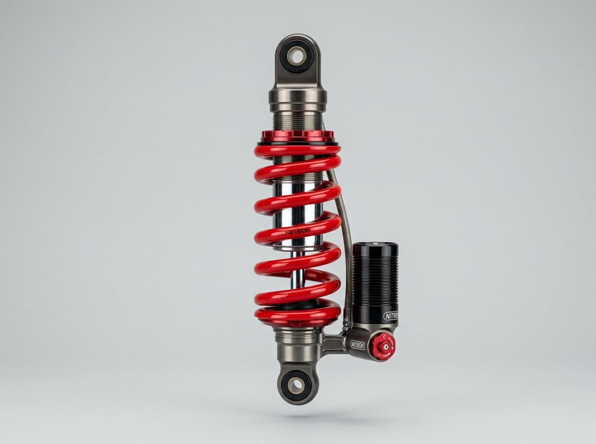

BÀI 6: DAO ĐỘNG TẮT DẦN. DAO ĐỘNG CƯỠNG BỨC. HIỆN TƯỢNG CỘNG HƯỞNG
Môn học: Vật lí 11 • Chương 1: Dao động
I. Dao Động Tắt Dần
Khi kéo một quả nặng của con lắc lò xo hoặc con lắc đơn lệch khỏi vị trí cân bằng rồi thả nhẹ trong không khí, ta thấy biên độ dao động của vật giảm dần theo thời gian, sau một khoảng thời gian vật sẽ dừng lại ở vị trí cân bằng.
Dao động tắt dần là dao động có biên độ và cơ năng giảm dần theo thời gian.
Khảo sát dao động tắt dần của Con lắc lò xo và Con lắc đơn
1. Nguyên nhân: Do lực ma sát và lực cản của môi trường tác dụng lên vật. Công của lực cản sinh ra là công âm, làm cho cơ năng của hệ dao động chuyển hóa dần thành nội năng (nhiệt lượng) tỏa ra môi trường.
2. Đặc điểm: Lực cản của môi trường càng lớn thì sự tiêu hao cơ năng diễn ra càng nhanh, dao động tắt dần càng nhanh. (Ví dụ: con lắc dao động trong nước tắt nhanh hơn trong không khí; dao động trong dầu nhớt tắt rất nhanh).
3. Biến thiên cơ năng: Cơ năng của vật giảm liên tục theo thời gian tỉ lệ thuận với bình phương biên độ: $W = \frac{1}{2}m\omega^2 A^2$.
Biên độ dao động giảm dần theo đường bao giảm mũ (nét đứt) do lực cản của môi trường.
Ứng dụng thực tế của dao động tắt dần

1. Bộ giảm xóc (Phuộc nhún)
Lắp ở bánh sau xe máy, ô tô gồm lò xo và piston trong xi lanh dầu. Khi xe xóc, lực cản nhớt dập tắt nhanh dao động nảy của lò xo, giúp xe chạy êm.
2. Thiết bị đóng cửa tự động
Tay co thủy lực gắn trên mép cửa sử dụng lò xo kéo kết hợp piston hãm dầu, giúp cánh cửa tự khép lại từ từ mà không bị va đập sầm mạnh.
3. Khung giảm chấn chống động đất
Lắp quả cầu thép nặng hàng trăm tấn treo ở các tầng cao nhất của tòa nhà chọc trời (như tháp Taipei 101) để dập tắt dao động do gió bão và động đất.
• Tác hại: Trong nhiều trường hợp, sự tắt dần làm tiêu hao cơ năng và làm dừng lại chuyển động của các thiết bị cần duy trì dao động liên tục lâu dài như đồng hồ quả lắc, con lắc vật lí trong máy đo gia tốc trọng trường, xích đu, võng...
• Biện pháp khắc phục: Cung cấp bổ sung năng lượng tuần hoàn cho hệ dao động đúng bằng phần cơ năng bị tiêu hao sau mỗi chu kì (thông qua dây cót, quả nặng, năng lượng pin hoặc mạch điện tử duy trì).
II. Dao Động Cưỡng Bức
Khi tác dụng một ngoại lực biến thiên tuần hoàn lên một hệ dao động, hệ sẽ dao động dưới tác dụng của lực này.
Dao động cưỡng bức là dao động của một hệ cơ học chịu tác dụng của một ngoại lực biến thiên tuần hoàn theo thời gian có dạng $F = F_0 \cos(\omega t + \varphi)$.
1. Tần số: Sau một thời gian quá độ ban đầu, dao động cưỡng bức trở nên ổn định. Khi đã ổn định, dao động cưỡng bức là dao động điều hòa có tần số bằng tần số của ngoại lực cưỡng bức ($f = f_F$, $\omega = \omega_F$).
2. Biên độ $A$: Biên độ của dao động cưỡng bức không đổi theo thời gian nhưng phụ thuộc vào 3 yếu tố quan trọng:
- Biên độ của ngoại lực $F_0$: Ngoại lực có biên độ $F_0$ càng lớn thì biên độ dao động cưỡng bức $A$ càng lớn.
- Lực cản của môi trường: Lực cản (ma sát) của môi trường càng nhỏ thì biên độ $A$ càng lớn.
- Độ chênh lệch giữa tần số ngoại lực $f$ và tần số riêng $f_0$ ($|f - f_0|$): Tần số ngoại lực càng tiến gần đến tần số riêng của hệ (tức $|f - f_0|$ càng nhỏ) thì biên độ dao động cưỡng bức $A$ càng lớn.
III. Hiện Tượng Cộng Hưởng
1. Định nghĩa hiện tượng cộng hưởng
Khi tần số của ngoại lực cưỡng bức tiến dần đến tần số dao động riêng của hệ, biên độ dao động cưỡng bức tăng dần và đạt giá trị cực đại khi hai tần số này bằng nhau.
Hiện tượng cộng hưởng là hiện tượng biên độ của dao động cưỡng bức tăng đột ngột đến giá trị cực đại khi tần số của ngoại lực cưỡng bức bằng tần số dao động riêng của hệ:
2. Đồ thị đường cong cộng hưởng
Khi lực cản môi trường càng nhỏ, đỉnh cộng hưởng càng cao và càng nhọn; khi lực cản lớn, đỉnh cộng hưởng thấp và tù.
3. Tầm quan trọng của hiện tượng cộng hưởng trong đời sống và kĩ thuật
Các ứng dụng có lợi của hiện tượng cộng hưởng:
1. Hộp đàn (Guitar, Violin)
Thùng đàn đóng vai trò là hộp cộng hưởng. Không khí trong thùng đàn dao động cộng hưởng cùng tần số dây đàn, giúp khuếch đại âm thanh phát ra to rõ.
2. Mạch chọn sóng Radio
Xoay núm dò đài để thay đổi tần số riêng của mạch LC trong máy thu trùng với tần số của đài phát ($f_0 = f$), dòng điện cảm ứng đạt cực đại giúp thu rõ đài.
3. Lò vi sóng
Phát ra sóng vi ba có tần số trùng với tần số dao động riêng của phân tử nước trong thức ăn, kích thích nước dao động mạnh sinh nhiệt làm chín thức ăn nhanh.
Các tác hại cần phòng ngừa và khắc phục:
1. Rung lắc sập cầu treo
Khi đoàn quân bước đều hoặc gió thổi tuần hoàn trùng tần số riêng của cầu (như cầu Tacoma Narrows năm 1940), cầu dao động cực đại dẫn đến gãy sập.
2. Rung lắc phá hủy bệ máy & khung vỏ
Tần số quay của động cơ máy móc nếu vô tình trùng với tần số dao động riêng của bệ đỡ hay vỏ tàu xe sẽ gây rung lắc dữ dội, làm nứt gãy các chi tiết máy.
IV. Bảng So Sánh Các Loại Dao Động
| Tiêu chí | Dao động tự do | Dao động tắt dần | Dao động cưỡng bức |
|---|---|---|---|
| Ngoại lực tác dụng | Không có (chỉ chịu nội lực của hệ) | Lực cản, lực ma sát của môi trường | Ngoại lực biến thiên tuần hoàn $F = F_0\cos(\omega t)$ |
| Tần số dao động | Tần số riêng $f_0$ | Không hoàn toàn tuần hoàn (gần bằng $f_0$) | Bằng tần số của ngoại lực $f = f_F$ |
| Biên độ dao động | Không đổi theo thời gian | Giảm dần theo thời gian đến 0 | Không đổi (phụ thuộc $F_0$, ma sát và $|f - f_0|$) |
| Cơ năng của hệ | Bảo toàn (không đổi) | Giảm dần (chuyển thành nhiệt năng) | Được cung cấp liên tục từ ngoại lực |
| Hiện tượng cộng hưởng | Không xảy ra | Không xảy ra | Xảy ra khi $f_F = f_0$ ($A$ đạt cực đại) |
| Ví dụ thực tế | Con lắc trong chân không không ma sát | Bộ giảm xóc xe máy, ô tô | Thân xe rung do động cơ, rung lắc cầu treo |
V. Các Dạng Bài Tập Trọng Tâm & Phương Pháp Giải Nhanh
DẠNG 1: Bài toán phần trăm biên độ và cơ năng tiêu hao trong dao động tắt dần
• Gọi $A_0$ và $W_0 = \frac{1}{2}kA_0^2$ là biên độ và cơ năng ban đầu.
• Sau một chu kì (hoặc sau thời gian $t$), biên độ giảm đi $p\%$ $\implies$ Biên độ còn lại là $A = (1 - p\%)A_0$.
• Cơ năng còn lại của vật là:
• Phần trăm cơ năng bị tiêu tán (chuyển hóa thành nhiệt lượng) là:
Một con lắc đơn dao động tắt dần chậm trong không khí. Sau mỗi chu kì dao động toàn phần, biên độ của con lắc giảm đi $3\%$. Tính phần trăm cơ năng bị tiêu hao sau chu kì đầu tiên.
• Sau một chu kì, biên độ của con lắc còn lại là:
$$A_1 = (1 - 0,03)A_0 = 0,97A_0$$
• Cơ năng còn lại sau chu kì thứ nhất:
$$W_1 = \frac{1}{2} m \omega^2 A_1^2 = \frac{1}{2} m \omega^2 (0,97A_0)^2 = (0,97)^2 W_0 = 0,9409 W_0$$
• Phần trăm cơ năng bị tiêu hao thành nhiệt lượng là:
$$\Delta W \% = \frac{W_0 - W_1}{W_0} \times 100\% = (1 - 0,9409) \times 100\% = 5,91\%$$
Đáp số: $5,91\%$.
DẠNG 2: Bài toán điều kiện xảy ra hiện tượng cộng hưởng cơ học
Hiện tượng cộng hưởng xảy ra khi chu kì của tác nhân cưỡng bức tuần hoàn bằng chu kì dao động riêng của hệ ($T = T_0$) hoặc tần số $f = f_0$.
Một người xách một xô nước đi bộ trên đường với bước đi dài $s = 50\,\text{cm}$. Chu kì dao động riêng của nước trong xô là $T_0 = 1\,\text{s}$. Người đó đi với tốc độ $v$ bằng bao nhiêu thì nước trong xô bị sóng sánh mạnh nhất (dễ tràn ra ngoài nhất)?
• Mỗi bước chân người đi sẽ gây ra một xung lực kích động tuần hoàn lên xô nước với chu kì bằng thời gian thực hiện một bước đi: $T = \frac{s}{v}$.
• Nước trong xô bị sóng sánh mạnh nhất khi xảy ra hiện tượng cộng hưởng, tức chu kì bước chân bằng chu kì riêng của nước:
$$T = T_0 \iff \frac{s}{v} = T_0 \implies v = \frac{s}{T_0}$$
• Thay số: $s = 50\,\text{cm} = 0,5\,\text{m}$, $T_0 = 1\,\text{s}$:
$$v = \frac{0,5\,\text{m}}{1\,\text{s}} = 0,5\,\text{m/s} = 1,8\,\text{km/h}$$
Đáp số: $v = 0,5\,\text{m/s}$.
Một đoàn tàu hỏa chạy đều trên đường ray thẳng gồm các thanh ray dài $L = 12,5\,\text{m}$ nối tiếp nhau. Tại mỗi chỗ nối có một khe hở nhỏ. Khung xe của toa tàu gắn trên hệ lò xo giảm xóc có chu kì dao động riêng $T_0 = 1,25\,\text{s}$. Hỏi đoàn tàu chạy với tốc độ bằng bao nhiêu thì toa tàu bị rung lắc mạnh nhất?
• Mỗi lần bánh xe đi qua chỗ nối giữa hai thanh ray, bánh xe nhận một lực kích thích từ gờ ray. Thời gian giữa 2 lần va chạm liên tiếp là chu kì của ngoại lực cưỡng bức:
$$T = \frac{L}{v}$$
• Toa tàu bị rung lắc dữ dội nhất khi xảy ra hiện tượng cộng hưởng cơ ($T = T_0$):
$$\frac{L}{v} = T_0 \implies v = \frac{L}{T_0} = \frac{12,5\,\text{m}}{1,25\,\text{s}} = 10\,\text{m/s} = 36\,\text{km/h}$$
Đáp số: $v = 10\,\text{m/s}$ (tương ứng $36\,\text{km/h}$).
DẠNG 3: Khai thác đồ thị đường cong cộng hưởng & So sánh biên độ
Cho hệ có tần số riêng $f_0$. Khi tác dụng ngoại lực có tần số $f_1$ cho biên độ $A_1$, tần số $f_2$ cho biên độ $A_2$:
• Tính độ chênh lệch: $\Delta f_1 = |f_1 - f_0|$ và $\Delta f_2 = |f_2 - f_0|$.
• Nếu $\Delta f_1 < \Delta f_2 \implies A_1 > A_2$ (tần số nào gần $f_0$ hơn thì biên độ lớn hơn).
• Nếu $\Delta f_1 = \Delta f_2 \implies A_1 = A_2$ (hai tần số cách đều $f_0$ thì biên độ bằng nhau).
Đồ thị bên dưới mô tả sự phụ thuộc của biên độ dao động cưỡng bức $A$ vào tần số $f$ của ngoại lực tác dụng lên một con lắc lò xo:
Dựa vào đồ thị, hãy:
a) Xác định tần số dao động riêng $f_0$ và biên độ cực đại $A_{\text{max}}$ của con lắc.
b) So sánh độ lớn của biên độ dao động khi tần số ngoại lực lần lượt là $f_1 = 2\,\text{Hz}$ và $f_2 = 5\,\text{Hz}$.
a) Đọc tần số riêng và biên độ cực đại:
• Đỉnh của đường cong cộng hưởng cho biết tần số dao động riêng: $f_0 = 4\,\text{Hz}$.
• Giá trị biên độ cực đại tại đỉnh: $A_{\text{max}} = 8\,\text{cm}$.
b) So sánh biên độ tại $f_1 = 2\,\text{Hz}$ và $f_2 = 5\,\text{Hz}$:
• Độ lệch tần số tại $f_1$: $\Delta f_1 = |f_1 - f_0| = |2 - 4| = 2\,\text{Hz}$.
• Độ lệch tần số tại $f_2$: $\Delta f_2 = |f_2 - f_0| = |5 - 4| = 1\,\text{Hz}$.
• Vì $\Delta f_2 < \Delta f_1$ ($f_2 = 5\,\text{Hz}$ gần $f_0 = 4\,\text{Hz}$ hơn so với $f_1 = 2\,\text{Hz}$) nên biên độ khi $f = 5\,\text{Hz}$ lớn hơn biên độ khi $f = 2\,\text{Hz}$ ($A_2 > A_1$).
1. Dao động tắt dần: Có biên độ và cơ năng giảm dần theo thời gian do ma sát chuyển hóa cơ năng thành nhiệt năng. Ma sát càng lớn tắt dần càng nhanh.
2. Dao động cưỡng bức: Chịu tác dụng ngoại lực tuần hoàn $F = F_0\cos(\omega t)$. Tần số ổn định $f = f_F$. Biên độ phụ thuộc $F_0$, lực cản và $|f - f_0|$.
3. Hiện tượng cộng hưởng: Biên độ cưỡng bức đạt cực đại khi tần số ngoại lực bằng tần số riêng ($f = f_0$). Lực cản càng nhỏ thì cộng hưởng càng nhọn.
4. Ứng dụng: Giảm xóc xe máy, tay co thủy lực (tắt dần); hộp đàn guitar, lò vi sóng, mạch thu sóng radio (cộng hưởng).